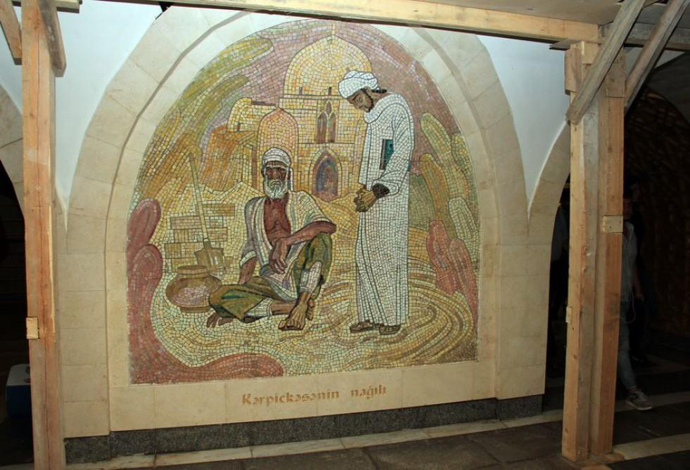

Overview
Baku, the vibrant capital of Azerbaijan, boasts a well-established and efficient metro system that plays a crucial role in the city's transportation infrastructure. The Baku Metro comprises three lines, each with its unique characteristics and serving key areas of the city. The Red Line, inaugurated in 1967, is the oldest line in the Baku Metro system. It traverses through significant stations, including the historic Icherisheher, the bustling Sahil, the patriotic 28 May, the residential Gara Garayev, and the dynamic Hazi Aslanov. Over the years, the Red Line has been a lifeline for commuters and tourists alike, providing a reliable means of navigating through the city. The Green Line, operational since 1976, is another integral part of Baku's metro network. Connecting areas such as Javanshir, Khatai, 20 Yanvar, Memar Ajami, and Nizami, the Green Line serves both residential and commercial districts, facilitating the daily commute for a diverse population. In 2016, a significant addition to the Baku Metro came in the form of the Purple Line, also known as the Purple Line Extension. This expansion introduced new stations like Ulduz, Shah Ismail Khatai, Nariman Narimanov, and Ahmedli, extending the reach of the metro system and catering to the growing demands of the city's evolving landscape. The Baku Metro is renowned for its cleanliness, punctuality, and modern amenities. The stations feature unique architectural designs, reflecting the rich cultural and historical heritage of Azerbaijan. Commuters appreciate the well-maintained trains and the convenience of reaching various parts of the city with ease.
Link: Source
The architectural designs of the Baku Metro stations stand as a testament to the cultural and historical richness of Azerbaijan. Each station reflects a blend of traditional Azerbaijani elements and modern aesthetics, creating a unique and visually appealing environment for commuters. In particular, the metro stations in Baku are known for their distinctive architectural styles that showcase the country's cultural identity. Many stations feature intricate mosaics, vibrant artworks, and ornate decorations that draw inspiration from Azerbaijani folklore, history, and natural landscapes. The use of traditional patterns and motifs in the design elements contributes to a sense of national pride and identity. One notable example is the Icherisheher station, located on the Red Line. As the station serving the historic Old City (Icherisheher), it incorporates architectural elements reminiscent of the medieval structures found in this UNESCO-listed site. The station's design creates a seamless connection between the modern transportation system and the rich heritage of the Old City. Moreover, the metro stations often serve as platforms for contemporary art, featuring sculptures, murals, and installations by local artists. This not only enhances the visual appeal of the stations but also promotes the cultural vibrancy of Azerbaijan's art scene. The commitment to architectural excellence extends beyond the aesthetic aspects. Stations are designed with a focus on functionality, ensuring smooth passenger flow, accessibility, and safety. Modern amenities and technology are seamlessly integrated into the architectural framework, providing commuters with a comfortable and efficient travel experience. As the metro system continues to evolve, there is an ongoing effort to incorporate sustainable and eco-friendly design principles. This includes energy-efficient lighting, waste reduction initiatives, and the use of environmentally conscious materials in construction, contributing to the broader global conversation on sustainable urban development. The architectural diversity of Baku Metro stations not only enhances the daily commute for residents but also serves as a point of interest for tourists exploring the city. By combining elements of tradition, innovation, and artistic expression, the Baku Metro contributes to the cultural landscape of Azerbaijan and underscores the nation's commitment to creating a harmonious blend of the past and the present in its urban spaces.
Discover Baku Metro's Rich Heritage and Architecture
Explore the fascinating history of Baku Metro, a testament to the city's resilience and strategic significance. The initial plans for this rapid-transit system emerged in the 1930s, gaining momentum after Baku's population surpassed one million following World War II.
Authorized by the Soviet Cabinet of Ministers in 1947, construction commenced in 1951, culminating in the inauguration of the metro on November 6, 1967. The first 6.5 kilometers of track were unveiled on the fiftieth anniversary of the October Revolution.
Baku Metro is renowned for its deep central stations, designed to double as bomb shelters during the Cold War. The stations boast exquisite decorations featuring Azerbaijani national motifs, such as the mosaics at Nizami and Neftchilar stations, and the stunning marble and copper work at Elmlyar Akademiyasy station.
Today, Baku Metro spans 34.6 km with 23 stations, facilitating approximately 560,000 daily rides. The city's commitment to metro development is evident in ongoing projects, with plans to extend the network to 199 km with 76 stations by 2030.
Marvel at the evolving architecture, as new stations with dramatic designs complement the system's rich heritage. While the metro operates from 06:00 to 24:00 daily, note that photography within Baku's metro is restricted.
Embrace the beauty of Baku's public infrastructure, symbolizing a legacy of investment in public transport and a commitment to aesthetic excellence.
Source: Historical information derived from the city's development program.
Baku for architecture buffs: the ultimate self-guided tour
Baku metro is another impressive feat of Soviet engineering. While newer stations and carriages have since been added, some retro carriages are still in use, and older stations like Ulduz with its futuristic ceiling and Neftchiler with its mosaic art depicting oil workers will transport you straight to mid-century Baku. Don’t miss Nizami station – decorated with mosaics depicting scenes from ancient Persian poet Nizami Ganjavi’s quintet of narrative poems known as Khamsa, it’s easily the city’s most beautiful metro station.
Link: Source
Mosaic walls of Nizami subway station restored

The text provides information about the architecture and artistic elements of Nizami metro station in Baku. The station, commissioned on December 31, 1976, is known for its dramatic mosaics featuring scenes based on the motives of the "Khamsa" poem by Azerbaijani poet Nizami Ganjavi. Despite being located in a geologically complex region, the station has faced challenges over its 40 years of activity, leading to the deterioration of installations, constructions, and decorative-architectural elements. Due to this, the station was recently partly closed for renovations.
The restoration of Nizami metro station involves the repair of its mosaic panels, with four out of 18 mosaic walls already being restored. The text emphasizes the challenging nature of the repair work, particularly in the restoration of mosaic panels. The supporting metal structures behind the panels were completely destroyed, posing a risk of spillage if repair works were delayed. Professional artists, namely Zohrab Jabbarov, Elchin Jabbarov, and Nizami Valiyev, are involved in the restoration process. Zohrab Jabbarov highlights the need to replace some pieces of stones to prevent deformation of the mosaic elements on the images. The repair work aims to preserve the original format of the station, including the handwritten Latin alphabet writings under the panels.
In summary, the Nizami metro station in Baku is notable for its artistic mosaics depicting scenes from Nizami Ganjavi's "Khamsa" poem. The recent renovations address the deterioration of the station's architectural and decorative elements, with a focus on restoring the mosaic panels.
Citation: Laman Ismayilova (AzerNews staff journalist)
My Personal Analysis
The Baku Metro, a vital component of Baku's urban infrastructure, boasts a distinctive architectural character that reflects both modern design principles and cultural influences. My analysis delves into the architectural structure of Baku Metro stations, examining key elements such as layout, materials, aesthetics, and functionality.
Layout and Spatial Organization:
Baku Metro stations exhibit a well-thought-out spatial organization, characterized by efficient layouts that prioritize passenger flow. Station entrances are strategically placed to enhance accessibility, with clear signage guiding commuters through ticketing areas, escalators, and platforms. The platforms themselves are designed for optimal crowd management, ensuring a seamless travel experience.
Architectural Aesthetics:
The architectural aesthetics of Baku Metro stations seamlessly blend modern design with elements inspired by Azerbaijani culture. The use of clean lines, geometric patterns, and a neutral color palette contributes to a contemporary feel, while subtle nods to local motifs and traditional art add a touch of cultural identity. The architectural elements aim to create a visually pleasing environment for passengers.
Materials and Construction:
The choice of materials in Baku Metro stations reflects a commitment to durability, functionality, and aesthetics. High-quality materials, such as stainless steel, glass, and polished stone, are commonly employed, contributing to a sleek and polished appearance. The durability of these materials ensures that the stations can withstand the rigors of daily use and maintain their aesthetic appeal over time.
Lighting and Ambiance:
Architectural lighting plays a crucial role in the overall ambiance of Baku Metro stations. Thoughtfully placed lighting fixtures enhance visibility, creating a safe and inviting atmosphere for passengers. The interplay of natural and artificial light is carefully orchestrated to highlight architectural features and contribute to the overall passenger experience.
Integration of Art and Design:
Baku Metro stations go beyond mere transportation hubs; they serve as showcases for public art. Integrating sculptures, murals, and other artistic elements into the architectural design adds a cultural dimension to the metro experience. These installations often celebrate local history, folklore, or contemporary themes, fostering a sense of pride and identity among commuters.
Accessibility Features:
The architectural design of Baku Metro stations prioritizes accessibility, incorporating features such as ramps, elevators, and tactile paving to cater to passengers with diverse mobility needs. The inclusive design approach ensures that the metro system is welcoming and user-friendly for all members of the community.
Future Considerations:
As Baku continues to evolve, the architectural structure of Metro stations is likely to adapt to new technological advancements and sustainability goals. Future considerations may include the integration of smart technologies, energy-efficient features, and a continued commitment to creating spaces that reflect the city's dynamic spirit.
In conclusion, the architectural structure of Baku Metro stations is a testament to the city's commitment to providing a modern, aesthetically pleasing, and inclusive public transportation system. The fusion of contemporary design principles with cultural influences creates a unique identity for the metro stations, contributing to the overall urban landscape of Baku.